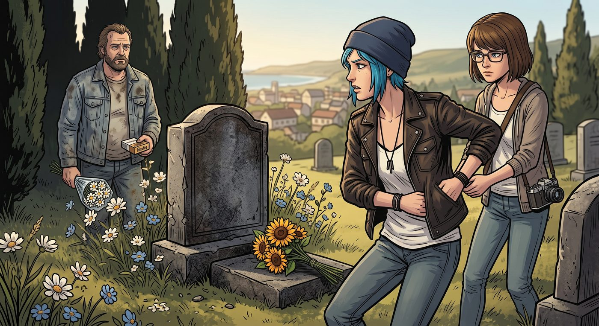

墓前的不速之客

一、冷雨初歇
深秋的阿卡迪亞灣公墓,冷雨剛停,墓碑周圍的枯草上還掛著一顆顆晶瑩的水珠。Chloe 和 Max 捧著花,一如既往地站在 Rachel 那塊白色大理石墓碑前。
風很冷,吹得兩人的髮絲微微揚起。
就在她們蹲下身,準備擺放帶來的花束時,身後忽然傳來一陣熟悉的、破舊房車引擎的轟鳴聲,伴隨著沉重的腳步踩碎枯枝的聲響。
二、Pompidou 的破冰
第一個從樹後跑出來的,是一隻繫著舊皮項圈的鬥牛犬——Pompidou。
牠看到 Chloe,並沒有像記憶裡那樣狂吠示警,只是放慢了腳步,湊過去,用濕漉漉的鼻子輕輕蹭了蹭她的工裝靴,尾巴有一下沒一下地搖著。
Chloe 聽到動靜猛地轉身,渾身肌肉瞬間繃緊,右手下意識按向夾克口袋的邊緣。
Max 幾乎在同一時間,下意識往前跨了半步,一把輕輕拉住 Chloe 的袖口,目光冷靜地迎向來人。
Frank 從陰影裡緩緩走出來,穿著一件洗得發白的舊夾克,手裡拿著一束顯然是在加油站隨手買的廉價白菊,還有一盒 Rachel 生前最愛抽的細支菸。
他看著 Chloe 眼裡毫不掩飾的戒備,腳步在三步開外停下,沒有像從前那樣掏出彈簧刀,也沒有破口大罵,只是沙啞地開口。
「……把手收起來吧,Price。」他的聲音帶著一種疲憊的克制,「老子今天不是來收帳的。」
Chloe 的手指僵了一下,終究還是慢慢從口袋邊緣鬆開。
三、各自的祭品
三人之間陷入一陣沉默,誰都沒有立刻開口。最終,還是 Chloe 先蹲下身,把手裡的東西一件一件擺到墓碑前——一支藍色羽毛耳墜、一張邊角已經泛黃的雙人拍立得,還有一罐 Rachel 以前最愛喝的櫻桃汽水。
Frank 沉默地看著,也跟著走上前,把那束廉價白菊放在花束旁邊,又掏出打火機,點燃那盒細支菸裡的一支,小心翼翼地插進濕潤的泥土裡。
一縷青煙裊裊升起,在冷風裡搖曳著,很快就被吹散。
Chloe 盯著那支菸看了好一會兒,忽然低下頭,飛快地抹了一把眼角,語氣冷冷的,卻沒什麼真正的敵意。
「她以前老嫌你抽的菸太嗆。」
Frank 扯動嘴角,露出一個比哭還難看的苦笑。
「但她每次沒錢買菸的時候,」他的聲音低沉下去,「抽得比誰都兇。」
Chloe 沒有再說話,只是望著那縷青煙,眼眶漸漸泛紅。
四、渺小的過往
風漸漸大了起來,吹得墓碑旁那束白菊微微顫動。
Chloe 和 Frank 曾經因為 Rachel 的謊言,彼此仇視,甚至拔刀相向——一個覺得對方是拋棄摯友私奔的背叛者,一個覺得對方是纏著自己女人不放的討厭鬼。可如今站在這方冰冷的石碑前,那些關於爭風吃醋、討債追賬、彼此猜忌的過往,在 Jefferson 那套殘忍到令人作嘔的暗房邏輯面前,顯得如此渺小而荒誕。
他們曾經以為自己是彼此的敵人,到頭來,不過是同樣深愛過一個像風一樣熱烈、卻把所有人都蒙在鼓裡的女孩的,兩個「遺孀」。
Max 靜靜地站在一旁,沒有插話,只是輕輕握住 Chloe 微微發顫的手。
五、鐵皮盒子
祭奠完,三人站在泥濘的小道旁,誰都沒有立刻離開。
Frank 從舊夾克內袋裡,摸出一個泛黃斑駁的鐵皮盒子,遞了過去。
「她落在我那輛破房車夾層裡的一些東西,」他的語氣有點生硬,「幾件破首飾,還有幾張……寫給別人、沒寄出去的明信片。留在我那兒,只會讓人心裡不痛快。」他頓了頓,把盒子往前遞了遞,「妳拿去吧。」
Chloe 猶豫了一下,伸手接過,指尖觸到鐵盒冰涼的表面,像是觸到了某種沉甸甸的重量。
「……你之後打算去哪?」她問,語氣裡帶著一絲難得的、不設防的關心,「還留在這座爛攤子似的鎮上,繼續開你的破房車?」
Frank 蹲下身,拍了拍 Pompidou 的腦袋,目光掃過一旁一直安靜守著、沒有插話的 Max。
「西雅圖吧,」他說,「或者隨便往北開,總之得離開這座發霉的破鎮子。」他站起身,忽然開口,「喂,Caulfield。」
Max 抬起頭,直視著他:「什麼事?」
Frank 深吸了一口帶著海腥味的冷空氣,眼神複雜地看著她,似乎在斟酌該怎麼把接下來的話說出口。
「看好這瘋丫頭,」他最終只是這麼說,語氣裡帶著一種近乎託付的鄭重,「別讓她把自己活成第二個 Rachel。」
Max 愣了一下,隨即重重點頭,聲音很輕卻很堅定:「我會的。」
Frank 沒有再多說什麼,轉身拉開那輛老舊房車的車門,吹著口哨招呼 Pompidou 跳上車。柴油引擎在漸暗的暮色中轟鳴著發動,緩緩駛離公墓,揚起的塵土和尾氣,很快被呼嘯的海風吹散得無影無蹤,他沒有再回頭看一眼。
六、離去
Chloe 握著那個鐵皮盒子,在 Rachel 的墓碑前,又靜靜站了三秒。
風把她額前的碎髮吹得凌亂,她伸手抹了把臉,轉身,牽起 Max 的手。
「走吧。」她的聲音有些沙啞,卻透著一種塵埃落定般的平靜。
兩人並肩走向皮卡車,身後,那支插在泥土裡的細菸,已經燃到了盡頭,只留下一小截灰白色的菸蒂,和那束在風裡輕輕搖曳的、廉價卻真誠的白菊。